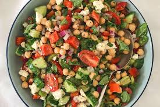

Mediterranean Chickpea Salad Recipe

Description
Transport your taste buds to the sun-drenched shores of the Mediterranean with this refreshing and vibrant chickpea salad. Bursting with flavor and nutrient-rich ingredients, this salad features tender chickpeas, crisp cucumber, sweet bell pepper, tangy cherry tomatoes, briny Kalamata olives, and creamy feta cheese, all tossed together in a zesty dressing of olive oil, lemon juice, garlic, and aromatic oregano. With its bold colors and tantalizing flavors, this Mediterranean chickpea salad is the perfect addition to any meal or a satisfying standalone dish that celebrates the vibrant flavors of the Mediterranean region.
Ingredients
- 1 can chickpeas, drained and rinsed
- 1 cucumber, diced
- 1 bell pepper, diced
- 1/2 red onion, finely chopped
- 1 cup cherry tomatoes, halved
- 1/4 cup Kalamata olives, pitted and halved
- 1/4 cup crumbled feta cheese
- 2 tablespoons extra virgin olive oil
- 2 tablespoons lemon juice
- 1 garlic clove, minced
- 1 teaspoon dried oregano
- Salt and pepper, to taste
Steps
- In a large bowl, combine chickpeas, cucumber, bell pepper, red onion, cherry tomatoes, olives, and feta cheese.
- In a small bowl, whisk together olive oil, lemon juice, minced garlic, dried oregano, salt, and pepper.
- Pour the dressing over the salad and toss until evenly coated.
- Chill in the refrigerator for at least 30 minutes before serving to allow the flavors to meld.
- Enjoy your refreshing Mediterranean chickpea salad!